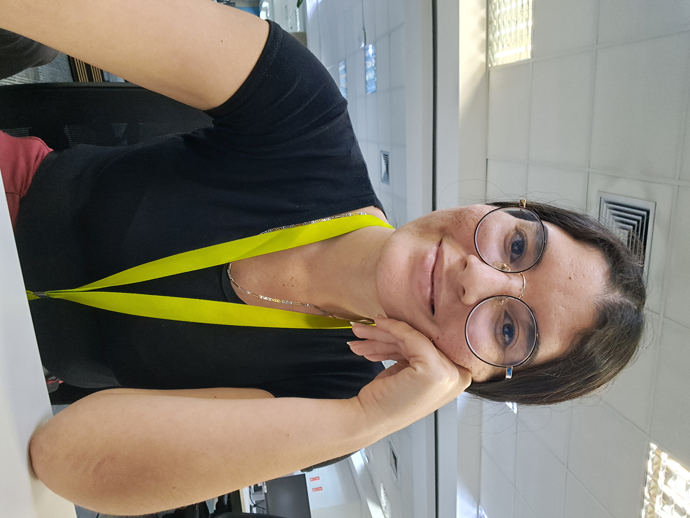
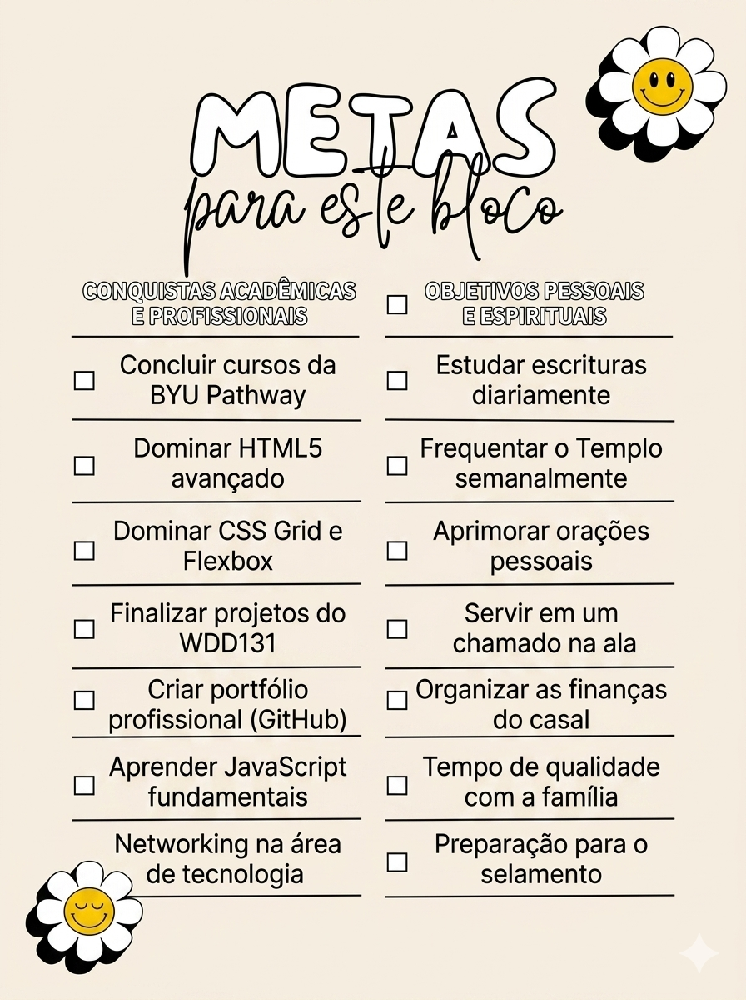

Sobre Mim
Olá! Meu nome é Karen Zerpa, sou venezuelana e atualmente moro em Campinas, SP. Sou estudante de Desenvolvimento de Software na BYU-Pathway Worldwide. Sempre tive um grande interesse pela área de tecnologia e estou focada em aprimorar minhas habilidades.

Campinas, São Paulo

Campinas é uma grande cidade do estado de São Paulo, conhecida como um polo de tecnologia, ciência e inovação no Brasil. Possui importantes universidades, centros de pesquisa e uma economia forte, além de belas áreas verdes e parques urbanos.